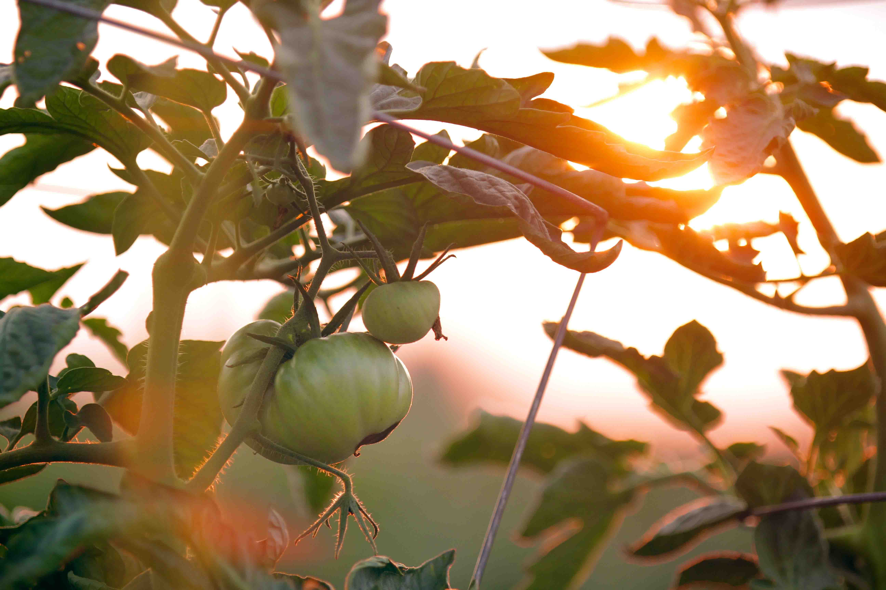

AGRICULTURE
USDA says it again: 2021 was a record year for farm exports
2021's exports beat the previous record by $22.5 billion, says Agriculture secretary Tom Vilsack.

AGRICULTURE
UC Davis leads effort to accelerate wheat breeding
The $15 million research project will bring together wheat breeders and researchers from 22 institutions.